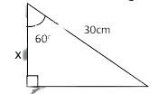
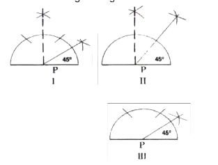
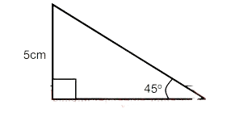

Best of luck
1: Approximate 5.7255 to the nearest thousandth.
2: Write in figure: six hundred and fifty-eight million, one hundred and twenty-five thousand and one.
3: Express 0.00254 in standard form.
4: Find the sum of prime factors in 60.
5: Round off 6827 to the nearest ten.
6: Express N32.00 as a ratio of N72.00.
7: Find the L.C.M. of 20a² and 32ab.
8: Add the following 1011two ; 1111 two and 101111 two.
9: Find the H.C.F of 108 and 72
10: Increase 4500kg by 15%
11: Find the product of the L.C.M. and H.C.F. of the following numbers 9, 12 and 18.
12: If N240,000.00 is shared among 3 people in the ratio 5:4:3, what is the least share?
13: Find the simple interest on N30,000.00 for 3½ years at 5% per annum.
14: Find the square root of 9 x 16 x 25.
15: A desktop computer is bought for N45,000.00 and sold for N30,000.00. Find the loss percent.
16: Arrange in descending order of magnitude 3/5, ½, 4/7,
17: On every sale of goods worth N10,000.00, there is a commission of N550.00. If an agent delivers N150,000.00, find his commission.
18: Multiply 1001101two by 111two.
19: A Toyota Hilux uses 100 litres of fuel in a distance of 250km. How many litres of fuel will it use for a distance of 150 kilometres?
20: Reciprocal of 0.65 to three significant figure is?
21: if P⁄5 = 4⁄5 find the value of P
22: The length of a basketball pitch can be divided into 12 parts, each 25cm long. How many parts, each 20cm long can be obtained from the pitch?
23: Find the value of x in the figure below.
24: The linear scale of two similar objects is 5:8. What is the volume scale factor?
25: The volume scale factor of two similar solids is 8:125. If the length of a side in the bigger solid is 140cm, find the length of the corresponding side of the smaller solid.
26: The linear scale factor of two similar shapes is 2:7. If the area of the bigger shape is 392cm², find the area of the smaller shape.
27: How many sides have a regular polygon whose interior angle is 180° each?
28: One interior angle of a hexagon is 170∘ and each of the remaining interior angle is equal to Y∘. Find the value of Y.
29: Find the size of an interior angle of a regular octagon.
30: All the following are the properties of an equilateral triangle EXCEPT.
31: A regular polygon with 7 sides is called
32:
33: When three is divided by the sum of a certain number and 8, the result is the same as dividing 2 by the sum of that number and 3. Find the number
34: What does the construction below represent?
35: Which of the following method(s) is / are correct for constructing an angle 45o at P?

36: In the diagram below, find the ratio /ùê¥ùêµ///ùêµùê∂/
37: Find the area of a semi-circle of diameter 28cm.
38: A sector of a circle has an area of 15.4cm2. If the radius of the circle is 6cm, calculate the angle of the sector.
39: Find the area of the shaded portion in the figure below
40: The area of a triangle is 52cm². If the base of the triangle is 8cm, find its height.
41: Find the value of x in the figure below:

42: Use the four-figure tables to find the value of sin 73.4o.
Use the table below to answer questions 43 and 44
3y = -3x
43: Find the value of g + j.
44:
45: Find the value of x if 2ùë•⁄3= 5 ‚Äì 3x
46: Express 2ùë•⁄3- (ùë•-1)⁄4 as a single fraction.
47: Simply 3ùë•(4a-5b) ‚Äì 5ùë•(3a-2b)
48: What is the coefficient of q in the expansion of (2q + 1) (1 -2q)?
49: Expand (2x + 1)²
50: Factorize y²‚Äì 121.